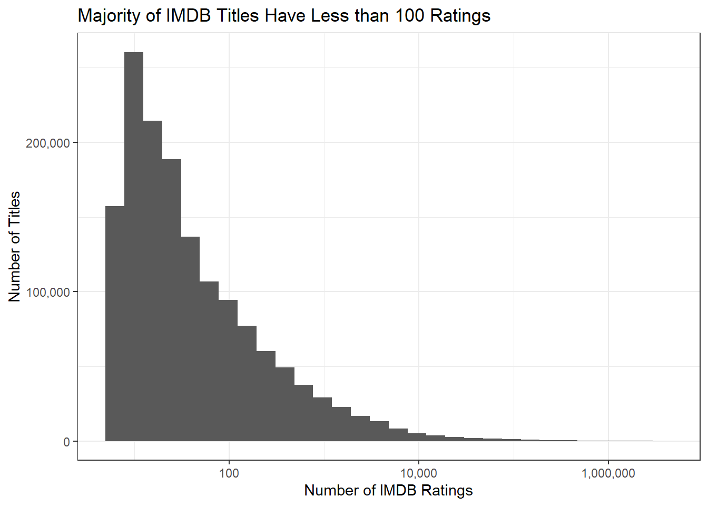
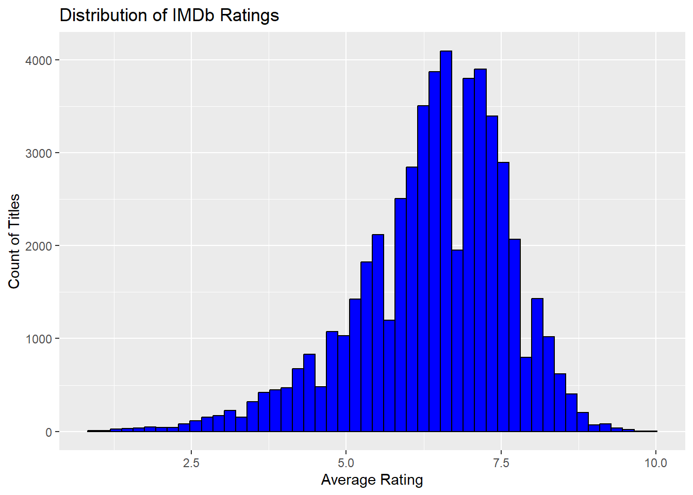
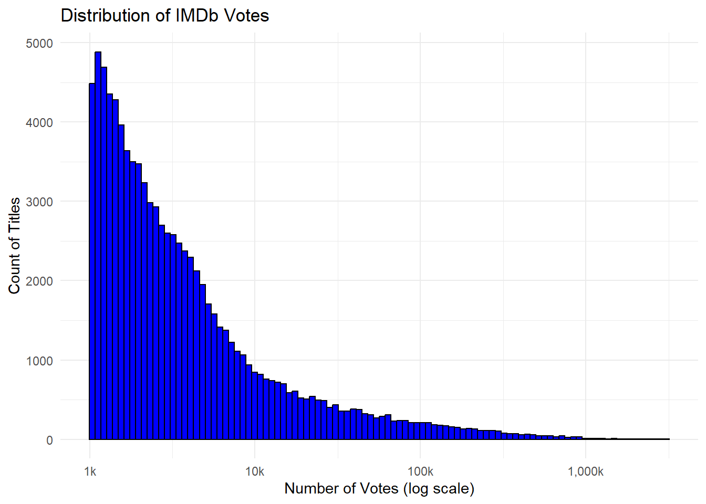
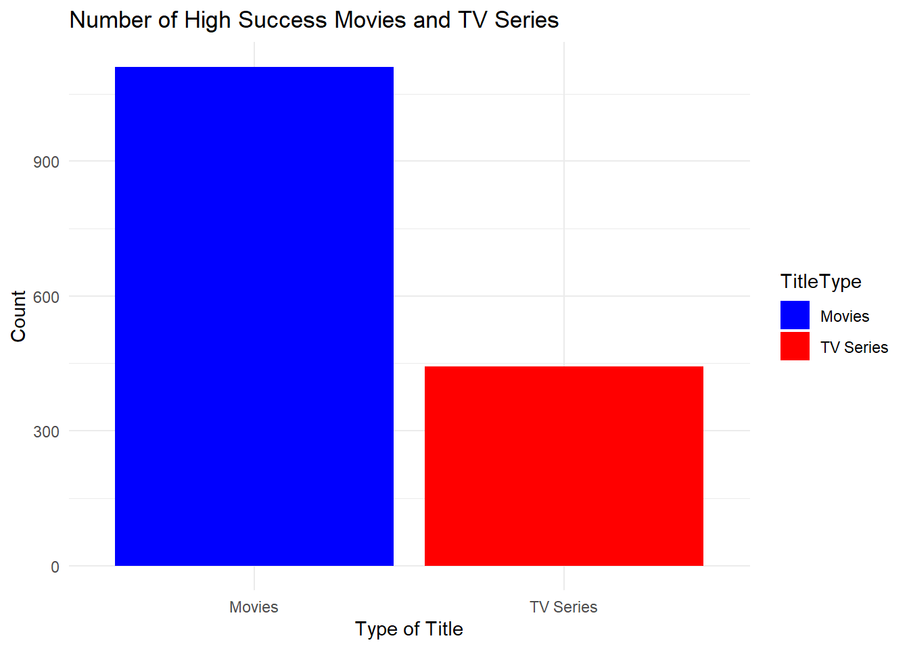
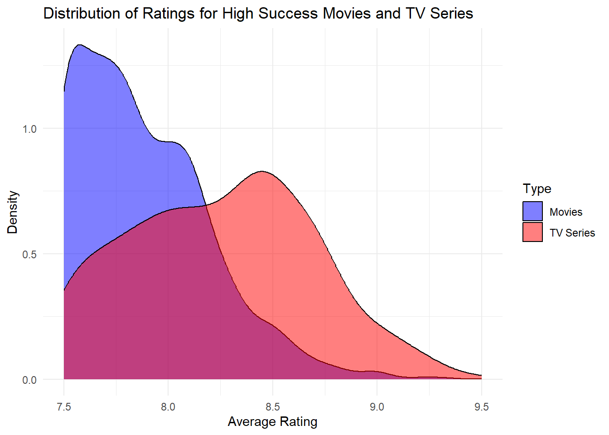
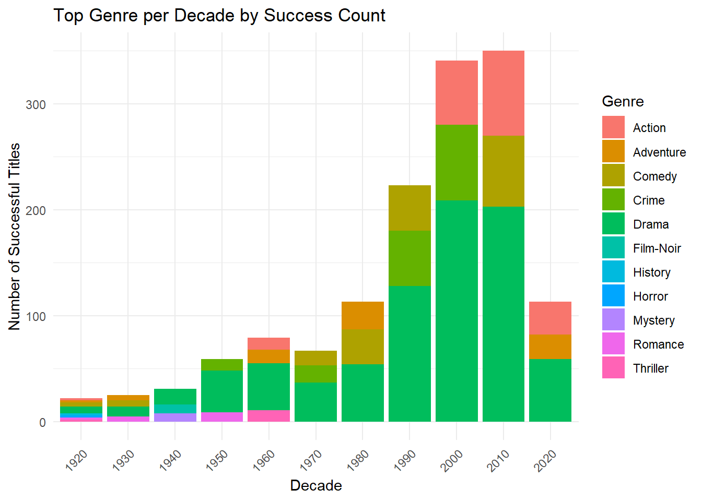
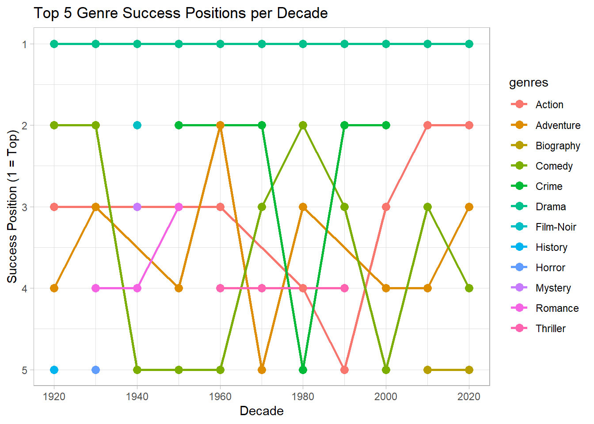
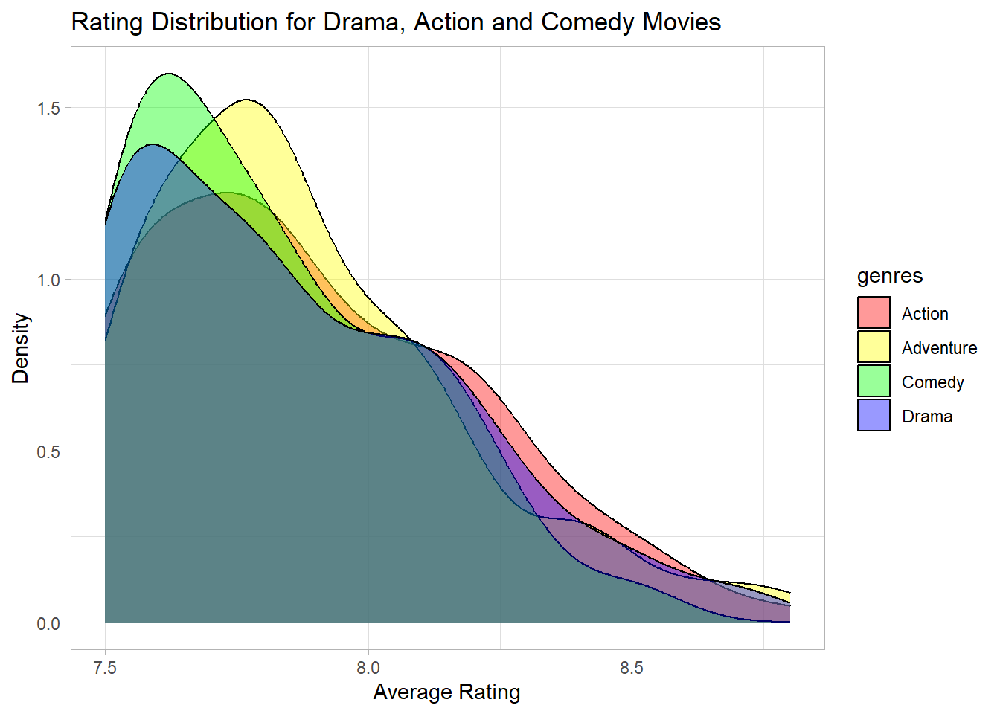
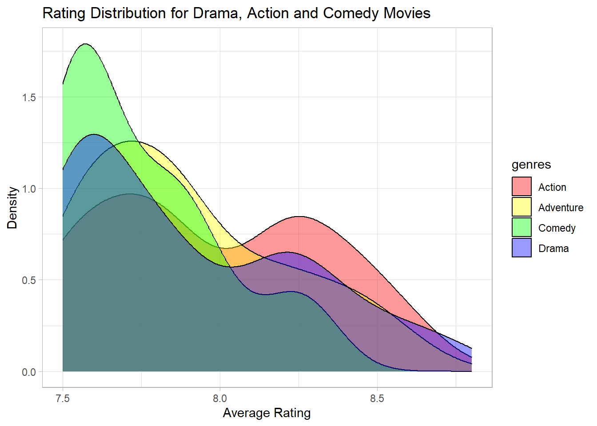
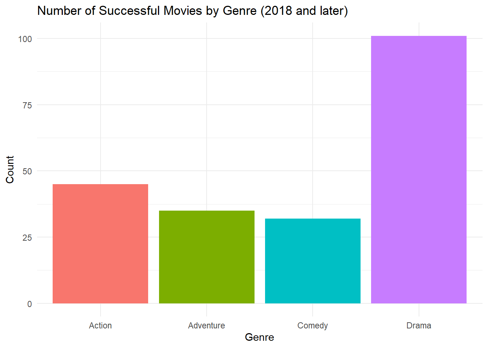

library(tidyverse)Mini-Project #02: The Business of Show Business
Introduction to the Mini-Project: The Business of Show Business
This project simulates the role of a Hollywood development executive, using data insights to propose a marketable movie idea. By analyzing IMDb datasets, we explore factors driving movie success, such as ratings, genres, and the impact of top actors and directors.
A key focus is identifying classic films for a potential remake—balancing audience trends with originality. The final pitch proposes a data-driven plan to align artistic vision with business strategy, culminating in a compelling proposal ready for studio approval.
Data Preparation
For this project, we will use data from the Internet Movie Database (IMDb). Specifically, we will use the tables from the IMDb non-commercial release. These files are made freely available by IMDb for non-commercial use.
The following code will automatically download and load these files into R:
get_imdb_file <- function(fname){
BASE_URL <- "https://datasets.imdbws.com/"
fname_ext <- paste0(fname, ".tsv.gz")
if(!file.exists(fname_ext)){
FILE_URL <- paste0(BASE_URL, fname_ext)
download.file(FILE_URL,
destfile = fname_ext)
}
as.data.frame(readr::read_tsv(fname_ext, lazy=FALSE))
}
TITLE_RATINGS <- get_imdb_file("title.ratings") |>
select(tconst, averageRating, numVotes) IMDb has a long tail of obscure movies:
TITLE_RATINGS |>
ggplot(aes(x=numVotes)) +
geom_histogram(bins=30) +
xlab("Number of IMDB Ratings") +
ylab("Number of Titles") +
ggtitle("Majority of IMDB Titles Have Less than 100 Ratings") +
theme_bw() +
scale_x_log10(label=scales::comma) +
scale_y_continuous(label=scales::comma)
To keep our computers from working too hard, let’s throw out any title with less than 100 ratings. It’s not too hard to see that this drops about 75% of the entire data set:
TITLE_RATINGS |>
pull(numVotes) |>
quantile() 0% 25% 50% 75% 100%
5 11 26 100 2955611 We are refining the dataset by applying a stricter filter that only includes titles with at least 1,000 votes. This ensures the selected entries have meaningful audience engagement while also significantly reducing the dataset’s size for more efficient analysis.
TITLE_RATINGS <- TITLE_RATINGS |>
filter(numVotes >= 1000)To ensure RStudio can handle the rendering process smoothly, I am reducing the size of the downloaded datasets by removing unnecessary columns from the tables. Additionally, I am using a semi-join with the reduced TITLE_RATINGS table to further limit the data to only relevant entries for our analysis.
saveRDS(TITLE_RATINGS, "title_ratings_filtered.rds")
NAME_BASICS <- get_imdb_file("name.basics") |>
select(nconst, primaryName, birthYear, deathYear, primaryProfession, knownForTitles) |>
filter(str_count(knownForTitles, ",") > 1)
saveRDS(NAME_BASICS, "name_basics_filtered.rds")
TITLE_BASICS <- get_imdb_file("title.basics") |>
select(tconst, primaryTitle, originalTitle, titleType, startYear, endYear, genres)
TITLE_BASICS <- TITLE_BASICS |>
semi_join(TITLE_RATINGS,
join_by(tconst == tconst))
saveRDS(TITLE_BASICS, "title_basics_filtered.rds")
TITLE_EPISODES <- get_imdb_file("title.episode") |>
select(tconst, parentTconst, seasonNumber, episodeNumber)
TITLE_EPISODES_1 <- TITLE_EPISODES |>
semi_join(TITLE_RATINGS,
join_by(tconst == tconst))
TITLE_EPISODES_2 <- TITLE_EPISODES |>
semi_join(TITLE_RATINGS,
join_by(parentTconst == tconst))
TITLE_EPISODES <- bind_rows(TITLE_EPISODES_1,
TITLE_EPISODES_2) |>
distinct()
saveRDS(TITLE_EPISODES, "title_episodes_filtered.rds")
TITLE_CREW <- get_imdb_file("title.crew") |>
select(tconst, directors, writers)
TITLE_CREW <- TITLE_CREW |>
semi_join(TITLE_RATINGS,
join_by(tconst == tconst))
saveRDS(TITLE_CREW, "title_crew_filtered.rds")
TITLE_PRINCIPALS <- get_imdb_file("title.principals") |>
select(tconst, nconst, category, job, characters)
TITLE_PRINCIPALS <- TITLE_PRINCIPALS |>
semi_join(TITLE_RATINGS, join_by(tconst == tconst))
saveRDS(TITLE_PRINCIPALS, "title_principals_filtered.rds")
rm(TITLE_EPISODES_1)
rm(TITLE_EPISODES_2)All six tables have been saved as RDS files, and now it’s time to load them back from the RDS format for further analysis.
# Loading filtered data sets from RDS files
NAME_BASICS <- readRDS("name_basics_filtered.rds")
TITLE_BASICS <- readRDS("title_basics_filtered.rds")
TITLE_EPISODES <- readRDS("title_episodes_filtered.rds")
TITLE_RATINGS <- readRDS("title_ratings_filtered.rds")
TITLE_CREW <- readRDS("title_crew_filtered.rds")
TITLE_PRINCIPALS <- readRDS("title_principals_filtered.rds")Task 1
Using the glimpse() function, we see that certain columns need type conversion. In NAME_BASICS, birthYear and deathYear should be converted to numeric using as.numeric(). In TITLE_EPISODES, both seasonNumber and episodeNumber should also be numeric. Similarly, startYear, endYear, and runtimeMinutes in TITLE_BASICS should be numeric. We can use mutate() to apply these changes efficiently.
NAME_BASICS <- NAME_BASICS |>
mutate(birthYear = as.numeric(birthYear),
deathYear = as.numeric(deathYear))
TITLE_EPISODES <- TITLE_EPISODES |>
mutate(seasonNumber = as.numeric(episodeNumber),
episodeNumber = as.numeric(episodeNumber))
TITLE_BASICS <- TITLE_BASICS |>
mutate(startYear = as.numeric(startYear),
endYear = as.numeric(endYear))Let’s look at all five tables and data types of their columns:
library(DT)
data_tables <- list(
NAME_BASICS = NAME_BASICS,
TITLE_BASICS = TITLE_BASICS,
TITLE_EPISODES = TITLE_EPISODES,
TITLE_RATINGS = TITLE_RATINGS,
TITLE_CREW = TITLE_CREW,
TITLE_PRINCIPALS = TITLE_PRINCIPALS
)
table_summary <- map_df(names(data_tables), ~ {
data <- data_tables[[.x]]
tibble(
Table_Name = .x,
Column_Names = paste(colnames(data), collapse = ", "),
Data_Types = paste(sapply(data, class), collapse = ", "),
Size = paste(nrow(data), "rows x", ncol(data), "cols")
)
})
datatable(
table_summary,
caption = "Summary of Data Tables",
options = list(dom = 't', pageLength = 5, lengthMenu = c(5, 10, 15)),
class = 'cell-border stripe'
)Task 2: Instructor-Provided Questions
1. How many movies are in our data set? How many TV series? How many TV episodes?
Before answering questions about movies and TV series, let’s first examine the data types present in the TITLE_BASICS dataset.
# Getting unique title types from TITLE_BASICS table
unique_title_types <- TITLE_BASICS |>
distinct(titleType) |>
pull(titleType)
unique_title_types [1] "short" "movie" "tvSeries" "tvMiniSeries" "tvMovie"
[6] "tvEpisode" "tvShort" "video" "tvSpecial" "videoGame" Now lets find the number of tv series, episodes and movies from the TITLE_BASICS data set:
num_tv_series_e <- TITLE_BASICS |>
filter(titleType == "tvSeries") |>
nrow()
cat("Number of tv series:", num_tv_series_e, "\n")Number of tv series: 8960 num_tv_ep <- TITLE_BASICS |>
filter(titleType == "tvEpisode") |>
nrow()
cat("Number of episodes:", num_tv_ep, "\n")Number of episodes: 29332 num_movies <- TITLE_BASICS |>
filter(titleType == "movie") |>
nrow()
cat("Number of movies:", num_movies, "\n")Number of movies: 44032 2. Who is the oldest living person in our data set?
# Filter for living individuals and find the oldest. deathYear column should not have any numeric data
oldest_living_person <- NAME_BASICS |>
filter(is.na(deathYear)) |>
arrange(birthYear) |>
slice_head(n = 1) |>
mutate(Age = 2024 - birthYear) |>
select(
`Person Name` = primaryName,
`Year Born` = birthYear,
Age,
`Death Year` = deathYear,
Profession = primaryProfession
)
oldest_living_person Person Name Year Born Age Death Year Profession
1 Traudl Lessing 1625 399 NA \\NThe last result seems questionable, possibly indicating a missing table in the dataset. To ensure accuracy, let’s focus only on individuals who are no older than 105 years.
oldest_living_person_under_105 <- NAME_BASICS |>
filter(is.na(deathYear),
birthYear > 2024 - 105) |>
arrange(birthYear) |>
slice_head(n = 1) |>
mutate(Age = 2024 - birthYear) |>
select(
`Person Name` = primaryName,
`Year Born` = birthYear,
Age,
`Death Year` = deathYear,
Profession = primaryProfession
)
oldest_living_person_under_105 Person Name Year Born Age Death Year Profession
1 Lily Aclemar 1920 104 NA actress3.There is one TV Episode in this data set with a perfect 10/10 rating and at least 200,000 IMDb ratings. What is it? What series does it belong to?
# Identify the TV episode with a perfect 10/10 rating and at least 200,000 votes, including season and episode details
perfect_rated_episodes_with_series <- TITLE_EPISODES |>
inner_join(TITLE_RATINGS, by = "tconst") |>
filter(numVotes > 200000, averageRating == 10) |>
inner_join(TITLE_BASICS, by = c("parentTconst" = "tconst")) |>
select(
`Title Type` = titleType,
`Title Name` = primaryTitle,
`Season Number` = seasonNumber,
`Episode Number` = episodeNumber,
`Average Rating` = averageRating,
`Number of Votes` = numVotes
)
perfect_rated_episodes_with_series Title Type Title Name Season Number Episode Number Average Rating
1 tvSeries Breaking Bad 14 14 10
Number of Votes
1 2306094. What four projects is the actor Mark Hamill most known for?
# Retrieve and display Mark Hamill's top projects with relevant title details
mark_hamill_project_details <- NAME_BASICS |>
filter(primaryName == "Mark Hamill") |>
select(knownForTitles) |>
tidyr::separate_longer_delim(knownForTitles, ",") |>
slice_head(n = 5) |>
inner_join(TITLE_BASICS, by = c("knownForTitles" = "tconst")) |>
select(
`Title Type` = titleType,
`Title Name` = primaryTitle,
`Original Title` = originalTitle
)
mark_hamill_project_details Title Type Title Name
1 movie Star Wars: Episode IV - A New Hope
2 movie Star Wars: Episode VIII - The Last Jedi
3 movie Star Wars: Episode V - The Empire Strikes Back
4 movie Star Wars: Episode VI - Return of the Jedi
Original Title
1 Star Wars
2 Star Wars: Episode VIII - The Last Jedi
3 Star Wars: Episode V - The Empire Strikes Back
4 Star Wars: Episode VI - Return of the Jedi5. What TV series, with more than 12 episodes, has the highest average rating?
# Retrieve the highest-rated series with more than 12 episodes and display relevant details
highest_rated_series_details <- TITLE_EPISODES |>
group_by(parentTconst) |>
summarise(episode_count = n(), .groups = 'drop') |>
filter(episode_count > 12) |>
inner_join(TITLE_RATINGS, by = c("parentTconst" = "tconst")) |>
group_by(parentTconst) |>
summarise(average_rating = mean(averageRating), .groups = 'drop') |>
arrange(desc(average_rating)) |>
slice_head(n = 1) |>
inner_join(TITLE_BASICS, by = c("parentTconst" = "tconst")) |>
select(
`Title Name` = primaryTitle,
`Average Rating` = average_rating)
highest_rated_series_details# A tibble: 1 × 2
`Title Name` `Average Rating`
<chr> <dbl>
1 Choufli Hal 9.76.Is it true that episodes from later seasons of Happy Days have lower average ratings than the early seasons?
# Check if there are multiple TV series called 'Happy Days' and display relevant details
happy_days_details <- TITLE_BASICS |>
filter(primaryTitle == "Happy Days" & titleType == "tvSeries") |>
select(
`Title Name` = primaryTitle,
`Type` = titleType,
`Start Year` = startYear,
`End Year` = endYear,
`Genres` = genres
)
print(happy_days_details) Title Name Type Start Year End Year Genres
1 Happy Days tvSeries 1974 1984 Comedy,Family,MusicThere are two TV series titled “Happy Days.” We will focus our analysis only on the one that premiered in 1974. lets check what season there are in the chosen TV weries.
# Analyze the season information and include the title name by joining with TITLE_BASICS
seasons_info <- TITLE_EPISODES |>
filter(parentTconst %in% c("tt0070992", "tt1437484")) |>
group_by(parentTconst) |>
summarise(
min_season = min(seasonNumber, na.rm = TRUE),
max_season = max(seasonNumber, na.rm = TRUE),
num_seasons = n_distinct(seasonNumber),
.groups = 'drop'
) |>
inner_join(TITLE_BASICS, by = c("parentTconst" = "tconst")) |>
select(
`Title Name` = primaryTitle,
`Minimum Season` = min_season,
`Highest Season` = max_season,
`Number of Seasons` = num_seasons
)
seasons_info# A tibble: 1 × 4
`Title Name` `Minimum Season` `Highest Season` `Number of Seasons`
<chr> <dbl> <dbl> <int>
1 Happy Days 1 27 27We can now confirm that the selected TV series matches the one required for the task. Let’s proceed with the analysis by dividing the series into ‘Early Seasons’ and ‘Later Seasons’, followed by calculating the average rating for each group.
# Analyze the average ratings of 'Happy Days' by dividing into 'Early Seasons' and 'Later Seasons'
happy_days_tconst <- TITLE_BASICS |>
filter(primaryTitle == "Happy Days", titleType == "tvSeries", startYear == 1974) |>
pull(tconst)
happy_days_ratings <- TITLE_EPISODES |>
filter(parentTconst == happy_days_tconst) |>
inner_join(TITLE_RATINGS, by = "tconst") |>
group_by(seasonNumber) |>
summarise(averageRating = mean(averageRating), .groups = 'drop') |>
mutate(seasonCategory = ifelse(seasonNumber <= 5, "Early Seasons", "Later Seasons")) |>
group_by(seasonCategory) |>
summarise(averageRating = mean(averageRating), .groups = 'drop')
happy_days_ratings# A tibble: 0 × 2
# ℹ 2 variables: seasonCategory <lgl>, averageRating <dbl>Task 3: Custom Success Metric
In this task we will create a custom success metric that reflects both the quality (average IMDb rating) and public awareness (number of votes). Using this metric, we’ll add a new column to the TITLE_RATINGS table with the help of the mutate() function. This metric will guide us in identifying the most successful movies for our proposal.
Before we start lets look at the distribution of IMDb Ratings of movies and tv series
filtered_titles <- TITLE_BASICS |>
filter(titleType %in% c("movie", "tvSeries")) |>
inner_join(TITLE_RATINGS, by = "tconst")
# Plotting the distribution of average ratings
ggplot(filtered_titles, aes(x = averageRating)) +
geom_histogram(bins = 50, fill = "blue", color = "black") +
labs(title = "Distribution of IMDb Ratings",
x = "Average Rating",
y = "Count of Titles")
Since our success metric will rely on both ratings and number of votes (public awareness), let’s first examine the distribution of votes to better understand how public engagement varies across titles.
library(scales)
success_titles <- TITLE_RATINGS |>
mutate(success = case_when(
averageRating >= 7.5 & numVotes >= 50000 ~ "High",
averageRating < 5.0 ~ "Low",
TRUE ~ "Medium"
))
# Plotting the distribution of numVotes with formatted axis labels
ggplot(success_titles, aes(x = numVotes)) +
geom_histogram(bins = 100, fill = "blue", color = "black") +
scale_x_log10(labels = comma_format(scale = 1/1000, suffix = "k")) +
labs(title = "Distribution of IMDb Votes",
x = "Number of Votes (log scale)",
y = "Count of Titles") +
theme_minimal() +
theme() 
Based on these two distributions, we can define a success metric. We’ll categorize movies and TV series as highly successful if they have an average rating of at least 7.5 out of 10 and at least 50,000 votes. This high vote threshold ensures that the titles we include predominantly come from USA and Europe, reflecting strong public engagement in these regions.
success_summary <- success_titles |>
group_by(success) |>
summarise(Count = n(), .groups = 'drop')
success_summary# A tibble: 3 × 2
success Count
<chr> <int>
1 High 1696
2 Low 7502
3 Medium 82793We assigned High success to 1695 titles, and Low success to 37861 titles.
# Analyze and visualize the number of high success movies and TV series
success_counts <- success_titles |>
filter(success == "High") |>
inner_join(TITLE_BASICS, by = "tconst") |>
filter(titleType %in% c("movie", "tvSeries")) |>
count(TitleType = titleType) |>
mutate(TitleType = ifelse(TitleType == "movie", "Movies", "TV Series"))
ggplot(success_counts, aes(x = TitleType, y = n, fill = TitleType)) +
geom_col() +
labs(
title = "Number of High Success Movies and TV Series",
x = "Type of Title",
y = "Count"
) +
scale_fill_manual(values = c("Movies" = "blue", "TV Series" = "red")) +
theme_minimal()
Lets look at are plot of successful movies and TV series distribution.
# Adjusted join and filtering for high success titles
title_details_high <- success_titles |>
filter(success == "High") |>
inner_join(TITLE_BASICS, by = "tconst") |>
filter(titleType %in% c("movie", "tvSeries"))
# Filter for movies and TV series specifically
movie_details_high <- title_details_high |>filter(titleType == "movie")
tv_series_details_high <- title_details_high |> filter(titleType == "tvSeries")combined_ratings <- bind_rows(
movie_details_high |> mutate(Type = "Movies"),
tv_series_details_high |> mutate(Type = "TV Series")
)
# Plotting the smooth area graph for both Movies and TV Series
ggplot(combined_ratings, aes(x = averageRating, fill = Type)) +
geom_density(alpha = 0.5) +
labs(
title = "Distribution of Ratings for High Success Movies and TV Series",
x = "Average Rating",
y = "Density"
) +
scale_fill_manual(values = c("Movies" = "blue", "TV Series" = "red")) +
theme_minimal()
Validate your success metric as follows:
1. Choose the top 5-10 movies on your metric and confirm that they were indeed box office successes.
top_movies <- movie_details_high |>
filter(numVotes > 100000) |>
arrange(desc(averageRating), desc(numVotes)) |>
head(5) |>
select(
`Title` = primaryTitle,
`Year Released` = startYear,
`Genres` = genres,
`Average Rating` = averageRating,
`Number of Votes` = numVotes
)
top_movies Title Year Released
1 The Shawshank Redemption 1994
2 The Godfather 1972
3 The Dark Knight 2008
4 The Lord of the Rings: The Return of the King 2003
5 Schindler's List 1993
Genres Average Rating Number of Votes
1 Drama 9.3 2955611
2 Crime,Drama 9.2 2060557
3 Action,Crime,Drama 9.0 2937308
4 Action,Adventure,Drama 9.0 2023485
5 Biography,Drama,History 9.0 1482543The box office data pulled from internet:
# Create a data frame with box office data and displaying a table
box_office_data <- data.frame(
Movie = c(
"The Shawshank Redemption (1994)",
"The Godfather (1972)",
"The Dark Knight (2008)",
"The Lord of the Rings: The Return of the King (2003)",
"Schindler's List (1993)"
),
`Worldwide Box-Office` = c(
"$29,331,551",
"$250,342,198",
"$1,009,025,676",
"$1,138,027,091",
"$322,161,245"
),
stringsAsFactors = FALSE
)
datatable(
box_office_data,
caption = "Box Office Data for Selected Movies",
options = list(
dom = 't',
ordering = FALSE
),
class = 'cell-border stripe'
)2. Choose 3-5 movies with large numbers of IMDb votes that score poorly on your success metric and confirm that they are indeed of low quality.
# Filtering movies classified as Low success with a significant number of votes
low_quality_high_votes <- success_titles |>
filter(success == "Low" & numVotes > 10000) |>
inner_join(TITLE_BASICS, by = "tconst") |>
arrange(desc(numVotes)) |>
select(primaryTitle, startYear, genres, averageRating, numVotes) |>
head(5)
low_quality_high_votes primaryTitle startYear genres
1 Fifty Shades of Grey 2015 Drama,Romance,Thriller
2 The Twilight Saga: New Moon 2009 Adventure,Drama,Fantasy
3 Batman & Robin 1997 Action,Sci-Fi
4 The Iron Throne 2019 Action,Adventure,Drama
5 The Twilight Saga: Breaking Dawn - Part 1 2011 Adventure,Drama,Fantasy
averageRating numVotes
1 4.2 340888
2 4.8 304579
3 3.8 271854
4 4.0 267760
5 4.9 258206# Creating a data frame with the new box office data and displaying the data as an interactive DT table
box_office_data <- data.frame(
Movie = c(
"Fifty Shades of Grey (2015)",
"The Twilight Saga: New Moon (2009)",
"Batman & Robin",
"The Twilight Saga: Breaking Dawn - Part 1"
),
`Worldwide Box-Office` = c(
"$569,651,467",
"$711,048,123",
"$238,259,753",
"$712,205,856"
),
stringsAsFactors = FALSE
)
datatable(
box_office_data,
caption = "Box Office Data for Selected Movies",
options = list(
dom = 't',
ordering = FALSE
),
class = 'cell-border stripe'
)These films, despite their low quality, managed to generate significantly higher revenue than their production budgets.
3. Choose a prestige actor or director and confirm that they have many projects with high scores on your success metric.
Lets take Leonardo DiCaprio as our prestige actor:
leo_projects <- NAME_BASICS |>
filter(primaryName == "Leonardo DiCaprio") |>
select(nconst, primaryName, knownForTitles) |>
separate_rows(knownForTitles, sep = ",") |>
rename(tconst = knownForTitles)
leo_ratings <- leo_projects |>
inner_join(TITLE_RATINGS, by = "tconst") |>
select(tconst, primaryName, averageRating, numVotes) |>
inner_join(TITLE_BASICS, by = "tconst") |>
select(primaryName, primaryTitle, startYear, averageRating, numVotes)
leo_ratings# A tibble: 4 × 5
primaryName primaryTitle startYear averageRating numVotes
<chr> <chr> <dbl> <dbl> <dbl>
1 Leonardo DiCaprio Inception 2010 8.8 2606661
2 Leonardo DiCaprio Titanic 1997 7.9 1310033
3 Leonardo DiCaprio The Departed 2006 8.5 1449938
4 Leonardo DiCaprio The Wolf of Wall Street 2013 8.2 1628787Based on my metrics, Leonardo DiCaprio has appeared in at least four highly successful movies.
Come up with a numerical threshold for a project to be a ‘success’; that is, determine a value such that movies above are all “solid” or better.
Based on my analysis, I’ve defined a success threshold:
- High Success: Average rating ≥ 8.0 and votes ≥ 10,000
- Low Success: Average rating < 5.0
- Medium Success: Everything in between This classification balances both critical quality and audience engagement to identify solid or better films.
Taks 4. Trends in Success Over Time
With a defined success metric in place, we can now explore how trends in success have evolved over time, focusing on shifts in genre popularity across decades. ### 1. What was the genre with the most “successes” in each decade?
top_genres_per_decade <- movie_details_high |>
mutate(decade = floor(startYear / 10) * 10) |>
separate_rows(genres, sep = ",") |>
group_by(decade, genres) |>
summarise(success_count = n(), .groups = "drop") |>
group_by(decade) |>
slice_max(success_count, n = 3)
# Creating a bar graph of the top genres per decade
ggplot(top_genres_per_decade, aes(x = factor(decade), y = success_count, fill = genres)) +
geom_col() +
labs(
title = "Top Genre per Decade by Success Count",
x = "Decade",
y = "Number of Successful Titles",
fill = "Genre"
) +
theme_minimal() +
theme(
axis.text.x = element_text(angle = 45, hjust = 1) # Rotate x-axis labels for better readability
)
As we can observe, the drama genre consistently dominated across all decades.
2. What genre consistently has the most “successes”? What genre used to reliably produced “successes” and has fallen out of favor?
# Extracting top 5 genres per decade with ranking
top_genres_positions <- movie_details_high |>
mutate(decade = floor(startYear / 10) * 10) |>
separate_rows(genres, sep = ",") |>
group_by(decade, genres) |>
summarise(success_count = n(), .groups = "drop") |>
group_by(decade) |>
arrange(desc(success_count)) |>
mutate(position = row_number()) |>
filter(position <= 5)
# Plotting the line graph with reversed success position scale
ggplot(top_genres_positions, aes(x = decade, y = position, color = genres, group = genres)) +
geom_line(size = 1) +
geom_point(size = 3) +
scale_y_reverse() +
scale_x_continuous(breaks = seq(1920, 2020, by = 20)) +
labs(
title = "Top 5 Genre Success Positions per Decade",
x = "Decade",
y = "Success Position (1 = Top)"
) +
theme_light()
We see that drama has the most successes. Comedy used to be the second most popular genre till the 1990s. Crime used to be popular until the 2010s. Now action movies became the second most successful genre.
3. What genre has produced the most “successes” since 2010? Does it have the highest success rate or does it only have a large number of successes because there are many productions in that genre?
# Filtering for Drama and Action genres
filtered_genres <- movie_details_high |>
separate_rows(genres, sep = ",") |>
filter(startYear >= 2010 & genres %in% c("Drama", "Action", "Comedy", "Adventure"))
# Creating smooth area plot
ggplot(filtered_genres, aes(x = averageRating, fill = genres)) +
geom_density(alpha = 0.4) + # Smooth density plot with transparency
labs(
title = "Rating Distribution for Drama, Action and Comedy Movies",
x = "Average Rating",
y = "Density"
) +
theme_light() +
scale_fill_manual(values = c("Comedy" = "green","Drama" = "blue", "Action" = "red", "Adventure" = "yellow"))
This plot suggests that, since 2010, the four genres have shown similar ratings and vote counts. However, comedy appears to be the least successful among them, likely indicating lower audience engagement or critical reception compared to the other genres.
4. What genre has become more popular in recent years?
# Filtering for Drama and Action genres
filtered_genres <- movie_details_high |>
separate_rows(genres, sep = ",") |>
filter(startYear >= 2018 & genres %in% c("Drama", "Action", "Comedy", "Adventure"))
# Creating smooth area plot
ggplot(filtered_genres, aes(x = averageRating, fill = genres)) +
geom_density(alpha = 0.4) + # Smooth density plot with transparency
labs(
title = "Rating Distribution for Drama, Action and Comedy Movies",
x = "Average Rating",
y = "Density"
) +
theme_light() +
scale_fill_manual(values = c("Comedy" = "green","Drama" = "blue", "Action" = "red", "Adventure" = "yellow"))
# Creating a histogram plot for genre counts
genre_counts <- movie_details_high |>
separate_rows(genres, sep = ",") |>
filter(startYear >= 2018 & genres %in% c("Drama", "Action", "Comedy", "Adventure")) |>
group_by(genres) |>
summarise(Count = n(), .groups = "drop")
# Ploting the histogram
ggplot(genre_counts, aes(x = genres, y = Count, fill = genres)) +
geom_col() +
labs(
title = "Number of Successful Movies by Genre (2018 and later)",
x = "Genre",
y = "Count"
) +
theme_minimal() +
theme(
legend.position = "none"
)
The data indicates that the Comedy and Adventure genres have been the least successful and popular in recent years. In contrast, Action and Drama genres have emerged as the most successful, likely driven by strong audience engagement and critical acclaim.
Task 5: Key Personnel
Next, we will focus on identifying key personnel to anchor our project. Specifically, we’ll select two actors and one director who have prior experience in the target genre, with at least moderate success and one major success to their credit.
We may explore combinations such as:
- An experienced, established actor paired with a rising star.
- A successful actor-director duo who have worked together before.
- A new collaboration between two high-profile individuals who have never worked together.
First, let’s explore the various professions in the movie industry based on the data pulled from the TITLE_PRINCIPALS table.
unique_categories <- unique(TITLE_PRINCIPALS$category)
print(unique_categories) [1] "self" "director" "producer"
[4] "cinematographer" "composer" "editor"
[7] "actor" "actress" "production_designer"
[10] "writer" "casting_director" "archive_footage"
[13] "archive_sound" For our movie proposal, I will select the drama genre, as it remains the most popular genre to date. For the director, I will focus on someone who has directed a successful drama since the year 2000. Additionally, I will ensure the chosen director is 70 years old or younger to ensure relevance and availability. From this pool, I will identify the top 10 directors with the highest number of successful movies to shortlist the ideal candidate.
current_year <- 2024
top_10_directors <- movie_details_high |>
filter(startYear >= 2000) |>
separate_rows(genres, sep = ",") |>
filter(genres == "Drama") |>
inner_join(TITLE_CREW, by = "tconst") |>
separate_rows(directors, sep = ",") |>
inner_join(NAME_BASICS, by = c("directors" = "nconst")) |>
filter(is.na(deathYear), (current_year - birthYear) <= 70) |>
group_by(directors, primaryName) |>
summarise(num_success_movies = n(), .groups = "drop") |>
arrange(desc(num_success_movies)) |>
slice_head(n = 10) |>
select(Movie_Director = primaryName, Number_of_Successful_Movies = num_success_movies)
# Displaying the table using DT
datatable(
top_10_directors,
caption = "Top 10 Drama Movie Directors by Number of Successful Movies",
options = list(dom = 't', ordering = FALSE),
class = 'cell-border stripe'
)Now, let’s identify five successful actors and five successful actresses to feature in our movie. Lets consider only movies filmed in recent 10 years. This way we make sure the actors and actresses are still active.
# Filtering and identifying top actors and actresses from successful movies (2014-2024)
result_table <- movie_details_high |>
filter(startYear >= 2014) |>
inner_join(TITLE_PRINCIPALS, by = "tconst") |>
filter(category %in% c("actor", "actress")) |>
inner_join(NAME_BASICS, by = "nconst") |>
group_by(primaryName, category) |>
summarise(num_success_movies = n(), .groups = "drop") |>
arrange(desc(num_success_movies)) |>
group_by(category) |>
slice_head(n = 5) |>
ungroup() |>
mutate(Role = ifelse(category == "actor", "Actor", "Actress")) |>
select(Role, Name = primaryName, `Number of Successful Movies` = num_success_movies)
# Display the result as a simple table
datatable(
result_table,
caption = "Top Actor and Actress by Number of Successful Movies",
options = list(dom = 't', ordering = FALSE),
class = 'cell-border stripe'
)In addition to selecting a director and two actors, let’s identify a successful screenwriter to further strengthen our project.
# Filtering drama movies, counting writers, and displaying top 10
top_10_writers <- movie_details_high |>
filter(startYear >= 2000) |>
separate_rows(genres, sep = ",") |>
filter(genres == "Drama") |>
inner_join(TITLE_CREW, by = "tconst") |>
separate_rows(writers, sep = ",") |>
inner_join(NAME_BASICS, by = c("writers" = "nconst")) |>
group_by(writers, primaryName) |>
summarise(num_success_movies = n(), .groups = "drop") |>
arrange(desc(num_success_movies)) |>
slice_head(n = 10) |>
select(Writer = primaryName, `Number of Successful Movies` = num_success_movies)
# Displaying the table
datatable(
top_10_writers,
caption = "Top 10 Drama Movie Writers by Number of Successful Movies",
options = list(dom = 't', ordering = FALSE),
class = 'cell-border stripe'
)Based on the data we gathered, an ideal lineup for our proposed drama movie would include Christopher Nolan as both the director and writer, given his history of success in the genre. Additionally, Ryan Reynolds would be a great fit as the lead actor, with Scarlett Johansson as the lead actress, forming a compelling and marketable cast.
Task 6: Finding a Classic Movie to Remake
Next, lets focus on finding a classic movie in the chosen genre to remake with my selected key talent. The goal is to identify a film with high IMDb ratings and strong audience reception, ensuring it hasn’t been remade in the last 25 years. This remake will leverage nostalgia while aligning with current trends to attract both loyal fans and new audiences.
# Identifying classic drama movies (before 1999) and check for remakes in the last 25 years
classics_candidates <- movie_details_high |>
filter(startYear < 1999) |>
separate_rows(genres, sep = ",") |>
filter(genres == "Drama") |>
arrange(desc(numVotes)) |>
slice_head(n = 50) |>
mutate(Remake = primaryTitle %in% movie_details_high$primaryTitle[movie_details_high$startYear >= 1999] |
originalTitle %in% movie_details_high$originalTitle[movie_details_high$startYear >= 1999])
# Displaying the result using DT
datatable(
classics_candidates |>
select(
`Title Name` = primaryTitle,
Year = startYear,
Rating = averageRating,
Popularity = numVotes,
Remake
),
caption = "Top 50 Classic Drama Movies and Potential Remakes",
options = list(
pageLength = 10,
lengthMenu = c(5, 10, 15),
dom = 'lfrtip'
),
class = 'cell-border stripe'
)A compelling option for our project is to remake “The Game” (ranked 46th in the table). I believe Ryan Reynolds and Scarlett Johansson would be excellent fits for the story. Their versatility and screen presence align perfectly with the film’s psychological and suspenseful tone. Personally, I admire both actors and am confident they can bring the necessary depth and intrigue to this type of movie.
Next, we will verify whether the key actors, directors, or writers from the original movie are still alive. If they are, we’ll coordinate with the legal department to secure the necessary rights for the remake. Additionally, we’ll explore the possibility of including any original cast members as fan service to enhance audience appeal.
# Pulling and filtering alive cast and crew of 'The Game' (tt0119174)
personnel_details <- bind_rows(
TITLE_PRINCIPALS |>
filter(tconst == "tt0119174") |>
select(nconst, category),
TITLE_CREW |>
filter(tconst == "tt0119174") |>
select(directors, writers) |>
pivot_longer(cols = everything(), values_to = "nconst", names_to = "category")
) |>
filter(!is.na(nconst)) |>
inner_join(NAME_BASICS, by = "nconst") |>
filter(is.na(deathYear)) |>
mutate(
age = 2024 - birthYear,
role = case_when(
category == "actor" ~ "Actor",
category == "actress" ~ "Actress",
category == "director" ~ "Director",
category == "writer" ~ "Writer",
TRUE ~ "Other"
)
)
# Displaying the table using DT
datatable(
personnel_details |>
select(Role = role, Name = primaryName, BirthYear = birthYear, Age = age),
caption = "Alive Cast and Crew of The Game",
options = list(
pageLength = 5,
lengthMenu = c(5, 10, 15),
dom = 'lfrtip'
),
class = 'cell-border stripe'
)Task 7: Write and Deliver Your Pitch
Proposal: The Game – A Thrilling Remake
We propose an exciting remake of the classic 1997 thriller The Game, featuring modern Hollywood stars Ryan Reynolds and Scarlett Johansson. Their exceptional talent and on-screen chemistry perfectly suit the film’s emotional depth and psychological intrigue. Reynolds’ unique ability to balance charm with intensity, alongside Johansson’s enigmatic presence, promises a gripping cinematic experience.
This remake is especially timely, as psychological thrillers are making a strong comeback. The original captivated audiences with its intricate plot and high stakes, making it an ideal choice for a modern reimagining. Johansson and Reynolds—both known for excelling across multiple genres—will attract a broad audience and ensure both critical acclaim and box office success.
With its themes of manipulation, reality distortion, and personal redemption, The Game feels even more relevant today in our fast-paced digital world. Featuring such A-list talent not only enhances the film’s commercial potential but also ensures it will resonate deeply with contemporary audiences.
Get ready for a mind-bending adventure that will keep viewers guessing until the final scene. The Game is back—bigger, bolder, and more thrilling than ever!